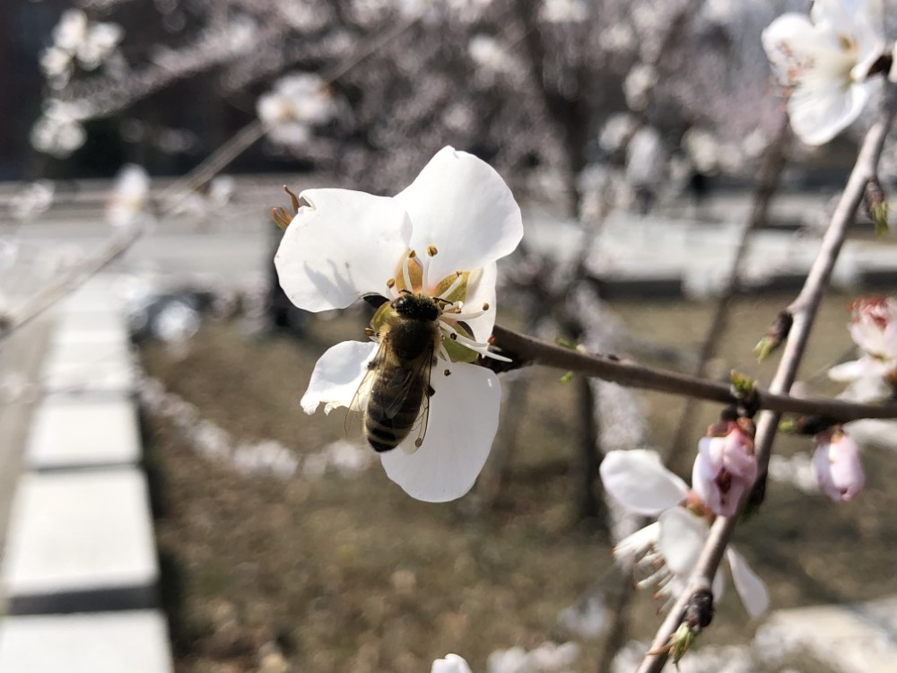

日记：4.24
难道真的有人已经把毕设实验做完了？！
🐱的小辫子
一个字，可爱😽。
再来一个就更好了🤓。
hia
😻给的红油面皮+豆干蛋
好香，好 hia！
单词游戏
c 开头， b 开头，sh 开头，
sh*t, di*k,
还挺好玩哈哈哈哈，停不下来，煮面皮的时候还在想。
背了😹的包包
像个傻子实验室差距
曲面显示器，超大屏幕……
我们怎么没有？
沉迷博客装修
搞了一天，终于有点样子了。
- [x] 黑暗模式
- [x] 代码高亮
- [x] 图片圆角
- [x] 阴影去掉
代办
- [ ] 文章目录
- [ ] 滚动进度
- [ ] 一键返回
吐槽一句，Github 同步怎么老是失败？？
MTT Done!
貌似是最后一个实验，结果还没看。
实验室的酶标仪真的垃圾，打印出来的字还没食堂打小票的清楚……
没办法直接导出电子版，还得手输。
折线图添加显著性检验标记（p 值）的 R 脚本已完成，运行即可。
本博客所有文章除特别声明外，均采用 CC BY-NC-SA 4.0 许可协议。转载请注明来自 Aohui's blog！
评论